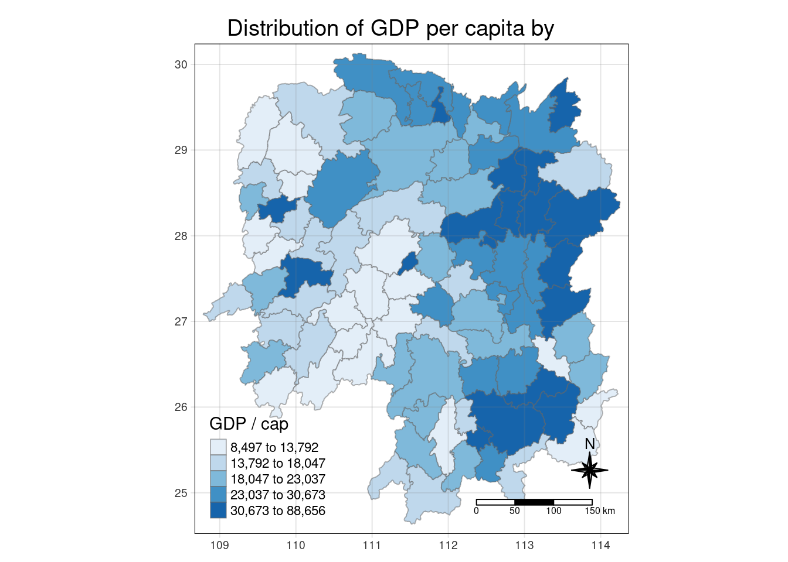

pacman::p_load(sf, sfdep, tmap, tidyverse)In-Class Exercise -
1 Getting Started
1.1 Installing and Loading Packages
1.2 Import data sets
1.2.1 Aspatial data
hunan2012 = read_csv("data/aspatial/Hunan_2012.csv")
head(hunan2012)# A tibble: 6 × 29
County City avg_w…¹ depos…² FAI Gov_Rev Gov_Exp GDP GDPPC GIO Loan
<chr> <chr> <dbl> <dbl> <dbl> <dbl> <dbl> <dbl> <dbl> <dbl> <dbl>
1 Anhua Yiya… 30544 10967 6832. 457. 2703 13225 14567 9277. 3955.
2 Anren Chen… 28058 4599. 6386. 221. 1455. 4941. 12761 4189. 2555.
3 Anxiang Chan… 31935 5517. 3541 244. 1780. 12482 23667 5109. 2807.
4 Baojing Huna… 30843 2250 1005. 193. 1379. 4088. 14563 3624. 1254.
5 Chaling Zhuz… 31251 8241. 6508. 620. 1947 11585 20078 9158. 4287.
6 Changni… Heng… 28518 10860 7920 770. 2632. 19886 24418 37392 4243.
# … with 18 more variables: NIPCR <dbl>, Bed <dbl>, Emp <dbl>, EmpR <dbl>,
# EmpRT <dbl>, Pri_Stu <dbl>, Sec_Stu <dbl>, Household <dbl>,
# Household_R <dbl>, NOIP <dbl>, Pop_R <dbl>, RSCG <dbl>, Pop_T <dbl>,
# Agri <dbl>, Service <dbl>, Disp_Inc <dbl>, RORP <dbl>, ROREmp <dbl>, and
# abbreviated variable names ¹avg_wage, ²deposite1.2.2 Geospatial data
hunanGeo = st_read(dsn = "data/geospatial",
layer = "Hunan")Reading layer `Hunan' from data source
`/cloud/project/In-class_Ex/In-class_Ex06/data/geospatial'
using driver `ESRI Shapefile'
Simple feature collection with 88 features and 7 fields
Geometry type: POLYGON
Dimension: XY
Bounding box: xmin: 108.7831 ymin: 24.6342 xmax: 114.2544 ymax: 30.12812
Geodetic CRS: WGS 84glimpse(hunanGeo)Rows: 88
Columns: 8
$ NAME_2 <chr> "Changde", "Changde", "Changde", "Changde", "Changde", "Cha…
$ ID_3 <int> 21098, 21100, 21101, 21102, 21103, 21104, 21109, 21110, 211…
$ NAME_3 <chr> "Anxiang", "Hanshou", "Jinshi", "Li", "Linli", "Shimen", "L…
$ ENGTYPE_3 <chr> "County", "County", "County City", "County", "County", "Cou…
$ Shape_Leng <dbl> 1.869074, 2.360691, 1.425620, 3.474325, 2.289506, 4.171918,…
$ Shape_Area <dbl> 0.10056190, 0.19978745, 0.05302413, 0.18908121, 0.11450357,…
$ County <chr> "Anxiang", "Hanshou", "Jinshi", "Li", "Linli", "Shimen", "L…
$ geometry <POLYGON [°]> POLYGON ((112.0625 29.75523..., POLYGON ((112.2288 …1.3 Combining data frames
hunan_gdppc = left_join(hunanGeo, hunan2012) %>%
select(1:4, 7, 15)Note that we keep columns NAME_3 and County to double check that the left join was done correctly and that spelling is the same across the two columns.
1.4 Plotting a Choropleth map
tm_shape(hunan_gdppc)+
tm_fill("GDPPC",
style = "quantile",
palette = "Blues",
title = "GDP / cap")+
tm_layout(main.title = "Distribution of GDP per capita by ",
main.title.position = "center",
main.title.size = 1.2,
legend.height = 0.45,
legend.width = 0.35,
frame = TRUE)+
tm_borders(alpha = 0.5)+
tm_compass(type = "8star", size = 2)+
tm_scale_bar()+
tm_grid(alpha = 0.2)
1.5 Contiguity Neighbors Analysis
Using the Queen method
cn_queen = hunan_gdppc %>%
mutate(nb = st_contiguity(geometry),
.before = 1)Using the Rooks method
cn_rooks = hunan_gdppc %>%
mutate(nb = st_contiguity(geometry, queen = FALSE),
.before = 1)1.6 Computing Contiguity Weights
Using the Queen method
wm_q = hunan_gdppc %>%
mutate(nb = st_contiguity(geometry),
wt = st_weights(nb),
.before = 1)Using the Rooks method
wm_r = hunan_gdppc %>%
mutate(nb = st_contiguity(geometry),
queen = FALSE,
wt = st_weights(nb),
.before = 1)